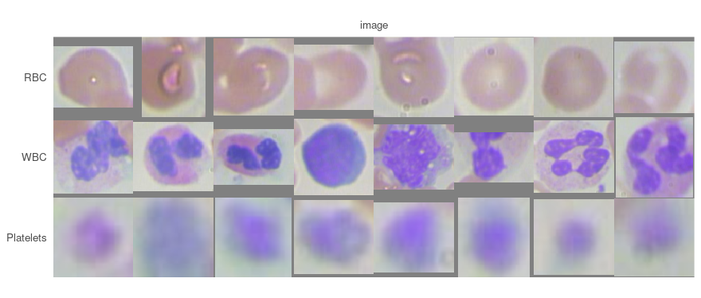
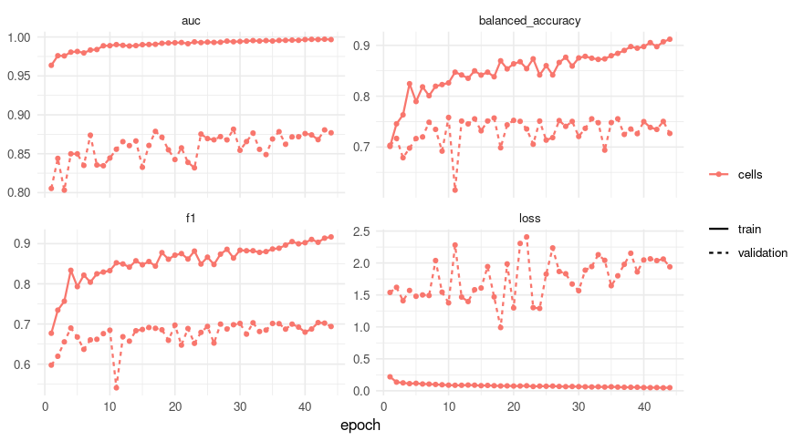
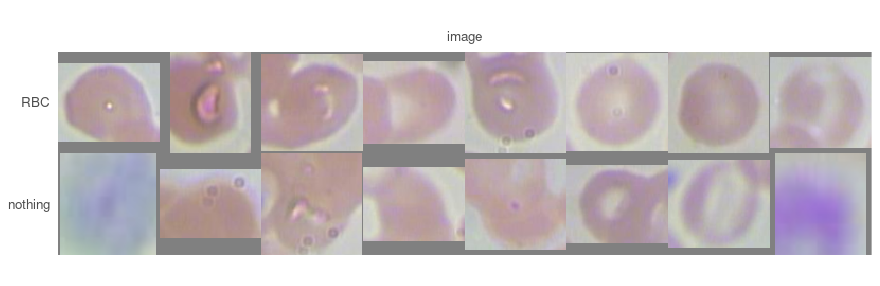
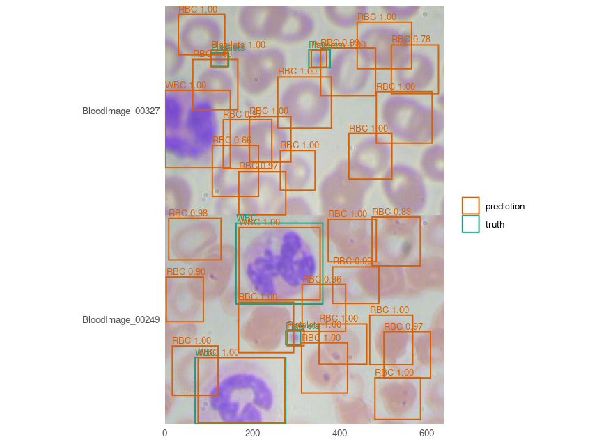

Naming what a detector found
A detector answers how many objects are there and where. A classifier answers what is this one picture of. Putting them in that order - find the objects, cut them out, hand the pieces to something that knows more classes than the detector does - is the second thing people ask for after boxes, and it is the one join this package deliberately leaves to you.
This page is that join, on BCCD, the same 364 photographs of blood smears the detection vignette uses. The detector is already trained and published, so nothing here has to find the cells again.
It does not end where it was meant to. The classifier learns the three cell types almost perfectly and fails completely at the one job it was added for, and the measurement that says why is the most useful thing on the page.
Every number and every picture below was produced by running the code shown.
Cutting the objects out, which is a decision about the data
detection_crops() returns arrays, and a classification run reads a directory or a CSV. The step in between - writing the crops out - is not in the engine, and crops()’s own docstring says why: which crops are worth keeping is a decision about the data rather than about either model. So the decision is made here, in a few lines a reader can see and argue with.
The data wrangling is the detection page’s, unchanged: BCCD arrives in Pascal VOC’s layout, one flat directory of images beside one flat directory of XML, which is neither of the two layouts the package reads.
voc_split <- function(root, listed) {
keys <- readLines(file.path(root, "ImageSets", "Main", paste0(listed, ".txt")))
keys <- keys[nzchar(keys)]
frame <- data.frame(
key = keys,
images = file.path(root, "JPEGImages", paste0(keys, ".jpg")),
annotations = file.path(root, "Annotations", paste0(keys, ".xml"))
)
path <- file.path(tempdir(), paste0("bccd-", listed, ".csv"))
write.csv(frame, path, row.names = FALSE)
path
}
splits <- vapply(c("train", "val", "test"), function(s) voc_split(data_dir, s), character(1))
cells <- c("RBC", "WBC", "Platelets")
kinds <- c(cells, "nothing")The annotation files are read twice below - once for what is in them and once to label a crop - so the reader is its own function:
voc_boxes <- function(path) {
xml <- paste(readLines(path, warn = FALSE), collapse = "")
nodes <- regmatches(xml, gregexpr("<object>.*?</object>", xml))[[1]]
pull <- function(tag) {
as.numeric(sub(paste0(".*<", tag, ">([^<]*)</", tag, ">.*"), "\\1", nodes))
}
# Pascal VOC is 1-based and inclusive of both ends, so a box written xmin=1 xmax=10 is
# 0..10 as a continuous interval. Reading it as 0-based shifts every box by a pixel.
data.frame(xmin = pull("xmin") - 1, ymin = pull("ymin") - 1,
xmax = pull("xmax"), ymax = pull("ymax"),
name = sub(".*<name>([^<]*)</name>.*", "\\1", nodes))
}The detector is borrowed rather than trained - fit = FALSE loads the published weights, and the boxes come back in each photograph’s own pixels:
detector <- platypus_fit(platypus_spec(
data = detection_data(splits[["train"]], splits[["val"]], test = splits[["test"]],
classes = cells, mode = "config_file"),
models = list(yolo3("cells", input_shape = c(416, 416),
weights = "bccd-yolo3", fit = FALSE))
), verbose = FALSE)
one <- detection_crops(detector, split = "test", size = c(96, 96))[[1]]
one$key
#> [1] "BloodImage_00007"
dim(one$crops[[1]])
#> [1] 96 96 3
head(data.frame(`colnames<-`(one$boxes, c("xmin", "ymin", "xmax", "ymax")),
score = as.numeric(one$scores), said = one$names), 3)
#> xmin ymin xmax ymax score said
#> 1 19.93539 300.9871 139.2865 392.0793 0.9999792 RBC
#> 2 27.77121 126.9517 140.5794 234.9014 0.9999719 RBC
#> 3 492.09385 303.5892 603.1343 396.8544 0.9999502 RBCsides <- do.call(rbind, lapply(read.csv(splits[["test"]])$annotations, function(path) {
box <- voc_boxes(path)
data.frame(name = box$name, side = sqrt((box$xmax - box$xmin) * (box$ymax - box$ymin)))
}))
round(tapply(sides$side, sides$name, median))
#> Platelets RBC WBC
#> 41 103 182size letterboxes rather than stretches, so a tall box keeps its shape - and it also throws away the one thing that separates these three classes most cleanly. Those are the median side lengths in pixels, and they differ by a factor of 4; brought to 96 x 96 every one of them is the same size. The classifier below has to work from appearance alone, which is worth knowing before reading its score.
A crop needs a label, and the label is a decision
Each crop is labelled by what it overlaps: the best unclaimed annotated object at an overlap of at least 0.5 gives its class, and a crop that matches nothing gets a fourth class. Naming that class rather than dropping those crops is the decision this section is about, and ?classification_data argues for naming: there is no background entry - an image is one of these, and a picture of nothing in particular is a class somebody has to name. Dropping them would train a classifier that believes every crop it will ever see is a cell.
overlap <- function(box, truth) {
wide <- pmax(0, pmin(box[3], truth$xmax) - pmax(box[1], truth$xmin))
tall <- pmax(0, pmin(box[4], truth$ymax) - pmax(box[2], truth$ymin))
both <- wide * tall
either <- (box[3] - box[1]) * (box[4] - box[2]) +
(truth$xmax - truth$xmin) * (truth$ymax - truth$ymin) - both
ifelse(either > 0, both / either, 0)
}
write_crops <- function(split, listed, into) {
found <- detection_crops(detector, split = split, size = c(96, 96))
files <- read.csv(splits[[listed]])
rownames(files) <- files$key
labels <- character(0); agreed <- logical(0); kept <- numeric(0)
missed <- numeric(0); hit_score <- numeric(0); miss_score <- numeric(0)
for (record in found) {
truth <- voc_boxes(files[record$key, "annotations"])
claimed <- rep(FALSE, nrow(truth))
# Highest score first, so the best box gets the object and a second one on the same
# object is what it is rather than what happened to be read first.
for (i in order(as.numeric(record$scores), decreasing = TRUE)) {
all_of_them <- overlap(as.numeric(record$boxes[i, ]), truth)
free <- all_of_them
free[claimed] <- 0
best <- which.max(free)
hit <- length(best) == 1L && free[best] >= 0.5
if (hit) {
claimed[best] <- TRUE
kept <- c(kept, free[best])
agreed <- c(agreed, record$names[[i]] == truth$name[best])
hit_score <- c(hit_score, as.numeric(record$scores)[i])
label <- truth$name[best]
} else {
# Kept for the section that asks what these actually are: the best overlap with
# ANY annotated object, claimed or not. A box above 0.5 here can only be a second
# box on an object some higher-scoring box already took.
missed <- c(missed, if (length(all_of_them)) max(all_of_them) else 0)
miss_score <- c(miss_score, as.numeric(record$scores)[i])
label <- "nothing"
}
labels <- c(labels, label)
target <- file.path(work, into, label)
dir.create(target, recursive = TRUE, showWarnings = FALSE)
png::writePNG(record$crops[[i]],
file.path(target, sprintf("%s-%03d.png", record$key, i)))
}
}
list(counts = table(factor(labels, kinds)), agreed = agreed, overlaps = kept,
missed = missed, hit_score = hit_score, miss_score = miss_score)
}
written <- list(
train = write_crops("train", "train", "train"),
validation = write_crops("validation", "val", "valid"),
test = write_crops("test", "test", "test")
)The dataset’s own three-way split all the way through, as the detection page uses it. One photograph’s crops go to one directory, so no image has a part of itself on two sides - which matters more here than usual, because two crops from one smear share its staining, its focus and its patient.
tally <- do.call(rbind, lapply(names(written), function(name) {
counts <- written[[name]]$counts
data.frame(split = name, as.list(counts), crops = sum(counts),
nothing_share = counts[["nothing"]] / sum(counts), check.names = FALSE)
}))
tally
#> split RBC WBC Platelets nothing crops nothing_share
#> 1 train 2367 214 209 129 2919 0.04419322
#> 2 validation 787 87 76 380 1330 0.28571429
#> 3 test 638 71 64 312 1085 0.28755760Read the last column before anything else. On the images the detector trained on, 4.4% of its crops match no annotated object; on the two splits it has never seen, 28.6% and 28.8%. A detector’s output on its own training images is not the output it will give you, and the factor here is about 6.5. Everything below is trained on the first column and measured on the last, which is the ordinary arrangement and the reason that difference has to be stated rather than discovered.
strip <- function(label, from = "test", n = 8) {
files <- sort(list.files(file.path(work, from, label), full.names = TRUE))
chosen <- files[round(seq(1, length(files), length.out = n))]
out <- array(0, dim = c(96, 96 * n, 3))
for (i in seq_along(chosen)) {
out[, (i - 1) * 96 + seq_len(96), ] <- png::readPNG(chosen[i])[, , 1:3]
}
out
}
montage <- array(0, dim = c(length(cells), 96, 96 * 8, 3))
for (j in seq_along(cells)) montage[j, , , ] <- strip(cells[j])
plot_masks(montage * 255, labels = cells)
Eight crops of each cell type, evenly spaced through the test split rather than chosen. The grey at the edge of some of them is the letterbox: a box that was not square keeps its shape and the frame is padded. White cells are stained purple and unmistakable; platelets are blurred because a 40-pixel object brought to 96 is an object magnified two and a half times.
What the detector already answers
Before training anything it is worth asking what a second model could add, and the answer is measurable in one line. Of the crops that do match an annotated object, how often was the detector’s own class right?
data.frame(
split = names(written),
matched = vapply(written, function(w) length(w$agreed), integer(1)),
agreed = vapply(written, function(w) sum(w$agreed), integer(1)),
overlap = round(vapply(written, function(w) mean(w$overlaps), numeric(1)), 4),
row.names = NULL
)
#> split matched agreed overlap
#> 1 train 2790 2790 0.9099
#> 2 validation 950 950 0.8118
#> 3 test 773 772 0.81601 wrong out of 1,723 on the two splits the detector never trained on. A detector’s class head sees the object at the scale it occurs, with the whole photograph around it; a classifier sees a 96 x 96 crop with the scale normalised away. On this dataset the first is already right essentially always, so naming the three cell types again is not work worth doing.
What is left is the other column: between a quarter and a third of what the detector hands over matches no annotated object at all. So the question this page can usefully ask is not what is this crop but is this crop anything - and that is the question the fourth class exists to answer.
The classifier, and the metric that is not accuracy
recipe <- function(seed = 1, loss = NULL) {
platypus_spec(
data = classification_data(
train = file.path(work, "train"),
validation = file.path(work, "valid"),
test = file.path(work, "test"),
classes = kinds,
mode = "nested_dirs"
),
models = list(classifier(
"cells",
input_shape = c(96, 96),
# No `encoder`, so this is the package's own contracting path. `block_width` rather
# than another level: halving a 96-pixel crop four times leaves a platelet with
# nothing, and `?classifier` names a crop of one cell as the case this lever is for.
blocks = 3, filters = 16, block_width = 2,
epochs = 60, batch_size = 32,
optimizer = optimizer_adam(learning_rate = 1e-3),
# A smear has no up and no down, so all three of these are free.
augmentation = list(
augmentation_step("HorizontalFlip", p = 0.5),
augmentation_step("VerticalFlip", p = 0.5),
augmentation_step("RandomRotate90", p = 0.5)
),
loss = loss,
metrics = list(metric_auc(), metric_balanced_accuracy(), metric_f1()),
callbacks = list(
callback_cosine_annealing(),
callback_early_stopping(monitor = "val_auc", patience = 15, restore_best = TRUE)
)
)),
seed = seed
)
}
spec <- recipe()class_balance() is worth running before the fit rather than after it, because the prevalence is what every later decision turns on:
class_balance(spec)
#> class n share
#> RBC 2367 0.81089414
#> WBC 214 0.07331278
#> Platelets 209 0.07159986
#> nothing 129 0.04419322
#>
#> 2919 images in 4 classes
#> RBC 2367 81.09%
#> WBC 214 7.33%
#> Platelets 209 7.16%
#> nothing 129 4.42%
#> rarest: nothing at 4.42%
#> below about 10% a metric read off the hard prediction stops telling a model from a collapse, so `auc` is the one to watchThe sentence under that table is the engine’s own, printed rather than copied, and it is the reason metric_accuracy() is offered here and is not the default: four fifths of the training crops are red cells, so a model that answers RBC to everything scores four fifths on this split and has learned nothing at all. The scoring section below puts that pair of numbers side by side on the split it is measured on.
fit <- platypus_fit(spec, verbose = FALSE)
fit
#> platypus fit
#> models : cells
#> device : NVIDIA GeForce GTX 1070 (torch 2.7.1+cu126)
#> epochs : cells=44
#> stopped : cells - early stopping: val_auc has not improved on 0.88155 for 15 epochs
#> next : evaluate(fit), predict(fit, "cells")plot(fit)
The gap between the two lines is the whole of what 2,919 crops buys. Training AUC reaches 0.9971 while validation stops at 0.8816, and the loss panel is the clearer half: the training loss falls to 0.047 while the validation loss rises from 1.54 to 1.94. The model is memorising crops. Early stopping restored epoch 29 of 44 - the best val_auc, which is what it was told to watch - and nothing after it was learning anything that transfers.
The best_epoch column in the table below says 18 instead, and that gap is worth a sentence rather than a second look. That column is the lowest validation loss, read off the history whatever the callback was watching, and on a run whose loss rises while its AUC improves the two are 11 epochs apart. The scores in that row are the restored epoch’s; the column names another one. maju116/pyplatypus#398 asks which of the two the column should be.
Scoring per class, because the mean is the commonest class
score <- evaluate(fit, split = "test")
score
#> model architecture loss_function parameters split epochs_run best_epoch
#> 1 cells plain_cnn cce 294516 test 44 18
#> loss auc balanced_accuracy f1
#> 1 1.712858 0.872728 0.7283742 0.6816569said <- predict(fit, split = "test")
head(said, 3)
#> key label predicted probability
#> 1 Platelets/BloodImage_00011-008.png Platelets Platelets 0.9075906
#> 2 Platelets/BloodImage_00015-007.png Platelets Platelets 0.9427061
#> 3 Platelets/BloodImage_00016-010.png Platelets Platelets 0.5885475
table(truth = factor(said$label, kinds), said = factor(said$predicted, kinds))
#> said
#> truth RBC WBC Platelets nothing
#> RBC 637 0 0 1
#> WBC 0 71 0 0
#> Platelets 0 1 52 11
#> nothing 253 5 22 32c(accuracy = mean(said$label == said$predicted),
always_the_commonest = max(table(said$label)) / nrow(said))
#> accuracy always_the_commonest
#> 0.7299539 0.5880184An accuracy of 0.730 against 0.588 for a model that answers RBC to everything. That is the whole argument for the default metric in one pair of numbers: the gap is 0.142, and a reader told only the first would believe something had been learned about all four classes. Balanced accuracy, which weighs a rare class as much as a common one, reads 0.7284.
The table above says where it went. The three cell types are nearly perfect - red cells 637 of 638, white cells 71 of 71, platelets 52 of 64. The fourth class is a rout: 32 of 312, with 253 of them called a red cell.
Two things that do not help, measured rather than assumed
A second seed of the same recipe, and the loss that exists for exactly this problem - focal cross-entropy, which loses interest in what it already gets right:
rejected <- function(answers) {
sum(answers$label == "nothing" & answers$predicted == "nothing") /
sum(answers$label == "nothing")
}
arms <- list(`seed 2` = recipe(seed = 2), focal = recipe(loss = loss_focal(gamma = 2)))
others <- lapply(arms, function(s) {
run <- platypus_fit(s, verbose = FALSE)
cbind(evaluate(run, split = "test"), rejected = rejected(predict(run, split = "test")))
})
cbind(arm = c("seed 1", names(others)),
do.call(rbind, c(list(cbind(score, rejected = rejected(said))), others))[
, c("auc", "balanced_accuracy", "rejected")])
#> arm auc balanced_accuracy rejected
#> 1 seed 1 0.8727280 0.7283742 0.10256410
#> seed 2 seed 2 0.8656669 0.7458934 0.09294872
#> focal focal 0.8803432 0.7237580 0.05128205Two seeds of one recipe differ by 0.0071 of AUC and focal loss moves it by 0.0076, which are the same order of magnitude - and two runs are not a spread, so neither figure is worth a conclusion on its own. The column that can carry one is the last: the share of the detector’s unmatched boxes that the model rejects runs from 0.05 to 0.10 across all three, which is to say that none of them does it. The arms differ in the figure that is noisy and agree in the one the page is about.
The class that is not a picture of anything
The obvious repair is not to make the classifier choose, but to ask it for a probability and reject a crop when it is confident enough. The threshold is a decision about cost, so it is chosen on the validation split and only then read on the test split:
reject_at <- function(split, thresholds = c(0.1, 0.3, 0.5, 0.7, 0.9, 0.99)) {
answers <- predict(fit, split = split)
chance <- predict(fit, split = split, type = "probability")[answers$key, "nothing"]
cell <- answers$label != "nothing"
do.call(rbind, lapply(thresholds, function(t) {
dropped <- chance > t
data.frame(split = split, threshold = t,
cells_kept = sum(!dropped & cell) / sum(cell),
alarms_dropped = sum(dropped & !cell) / sum(!cell),
precision = sum(!dropped & cell) / sum(!dropped))
}))
}
ladder <- rbind(reject_at("validation"), reject_at("test"))
ladder
#> split threshold cells_kept alarms_dropped precision
#> 1 validation 0.10 0.9568421 0.15000000 0.7378247
#> 2 validation 0.30 0.9842105 0.11842105 0.7362205
#> 3 validation 0.50 0.9915789 0.09473684 0.7325039
#> 4 validation 0.70 0.9968421 0.06842105 0.7279016
#> 5 validation 0.90 1.0000000 0.02894737 0.7202426
#> 6 validation 0.99 1.0000000 0.00000000 0.7142857
#> 7 test 0.10 0.9573092 0.20192308 0.7482305
#> 8 test 0.30 0.9767141 0.13141026 0.7358674
#> 9 test 0.50 0.9844761 0.09615385 0.7296261
#> 10 test 0.70 0.9909444 0.07371795 0.7260664
#> 11 test 0.90 0.9987063 0.03205128 0.7188082
#> 12 test 0.99 1.0000000 0.00000000 0.7124424Precision before any of this is 0.7124 - the share of what the detector hands over that is an annotated object. The best this buys on the test split is 0.7482, at the cost of 4.3% of the real cells: a gain of 0.036 of precision for 33 cells, from a second model, a second dataset and a second training run.
And a second model has to be worth more than the one number the first one already has. The detector’s operating_point buys the same trade with nothing trained:
mine <- predict(detector, split = "test")
files <- read.csv(splits[["test"]])
rownames(files) <- files$key
detector_at <- function(cut) {
boxes <- 0; hits <- 0
for (key in names(mine)) {
truth <- voc_boxes(files[key, "annotations"])
claimed <- rep(FALSE, nrow(truth))
above <- mine[[key]][mine[[key]]$score >= cut, ]
above <- above[order(above$score, decreasing = TRUE), ]
for (i in seq_len(nrow(above))) {
ratios <- overlap(c(above$xmin[i], above$ymin[i], above$xmax[i], above$ymax[i]), truth)
ratios[claimed] <- 0
best <- which.max(ratios)
if (length(best) == 1L && ratios[best] >= 0.5) {
claimed[best] <- TRUE
hits <- hits + 1
}
}
boxes <- boxes + nrow(above)
}
data.frame(operating_point = cut, boxes = boxes, cells_kept = hits / sum(said$label != "nothing"),
precision = hits / boxes)
}
curve <- do.call(rbind, lapply(c(0.5, 0.7, 0.8, 0.9, 0.95, 0.99), detector_at))
curve
#> operating_point boxes cells_kept precision
#> 1 0.50 1085 1.0000000 0.7124424
#> 2 0.70 1028 0.9715395 0.7305447
#> 3 0.80 990 0.9547219 0.7454545
#> 4 0.90 942 0.9275550 0.7611465
#> 5 0.95 907 0.8990944 0.7662624
#> 6 0.99 773 0.8111255 0.8111255The first row is the one everything above was measured at, and boxes reproduces the 1,085 crops as a control that this is the same set of predictions read a second way. The rest of the table is the same trade the classifier was making, made by one argument: at an operating_point of 0.8, the detector keeps 0.955 of the cells against the classifier’s 0.957, at a precision of 0.7455 against 0.7482. A number that is already in the specification is on the same curve as a second model, and that is the comparison a page like this owes before it recommends anything.
So the rejector does not work, and the interesting question is why not. It is not the threshold and not the loss. It is the label.
un <- written$test
table(cut(un$missed, c(-Inf, 0, 0.25, 0.5, Inf),
labels = c("overlaps nothing annotated", "barely touches one (< 0.25)",
"off its object (0.25 to 0.5)", "a second box on a claimed object")))
#>
#> overlaps nothing annotated barely touches one (< 0.25)
#> 92 182
#> off its object (0.25 to 0.5) a second box on a claimed object
#> 31 7
round(c(unmatched = median(un$miss_score), matched = median(un$hit_score)), 4)
#> unmatched matched
#> 0.9864 0.9999The detector is not guessing. Those boxes carry a median score of 0.986 against 0.9999 for the ones that do match, and 92 of 312 of them overlap no annotated object whatsoever. A box that overlaps nothing, at a confidence of 0.99, on a picture of a blood smear, is either a mistake with no cause or a cell nobody wrote down. Looking at them settles which:
pair <- c("RBC", "nothing")
both <- array(0, dim = c(2, 96, 96 * 8, 3))
for (j in seq_along(pair)) both[j, , , ] <- strip(pair[j])
plot_masks(both * 255, labels = pair)
The bottom row is the fourth class, and it is the top row again: red cells, whole and overlapping, one out-of-focus smudge of exactly the kind the platelet row is made of, and at the end a patch of the purple a white cell is stained with. nothing is not a picture of anything - it is a statement about the annotation, and the question is this cell written down in the XML is not answerable from a picture of the cell. The classifier is not failing; it is refusing a question that has no answer in its input.
One photograph makes the point better than the table does:
extra <- vapply(names(mine), function(k) {
nrow(subset(mine[[k]], score >= 0.5)) - nrow(voc_boxes(files[k, "annotations"]))
}, numeric(1))
pick <- names(sort(extra, decreasing = TRUE))[1:2]
data.frame(key = pick,
annotated = vapply(pick, function(k) nrow(voc_boxes(files[k, "annotations"])),
numeric(1)),
found = vapply(pick, function(k) nrow(subset(mine[[k]], score >= 0.5)),
numeric(1)),
row.names = NULL)
#> key annotated found
#> 1 BloodImage_00327 2 16
#> 2 BloodImage_00249 3 16
plot_boxes(read_images(files[pick, "images"], size = NULL), mine[pick],
truth = lapply(pick, function(k) voc_boxes(files[k, "annotations"])),
min_score = 0.5)
Green is the annotation and orange is the detector. The extra boxes are not errors; they are red cells. BCCD annotates a subset of what is in some of its photographs, and a model trained on 205 images of it learned to find cells rather than to find annotations - which is the right thing to have learned and the reason a quarter of its output scores as wrong.
What this costs beyond this page: a precision measured against an incomplete annotation is a lower bound rather than an estimate, so the per-class precision in the detection vignette understates the detector by an unknown amount. The figure is correct about the data and should not be read as a count of mistakes.
What this does not do
It does not show a classifier earning its place. On this dataset the detector already names its objects correctly 99.94% of the time, so the second model has nothing to add. Where one does earn its place is where the classes are finer than the detector’s: a detector that finds cells and a classifier that names twenty kinds of them, trained on crops whose labels come from somewhere other than the boxes. The surface on this page is the same one; only the labels would differ.
It is not a measurement of the annotation. That a detector finds cells no annotation mentions says the annotation is incomplete on those images; how incomplete, on which images and for which class is a question somebody would have to answer by looking, and nothing here did.
The crops lose the scale. Every one is 96 x 96 whatever it was cut from, so the single most separable property of these three classes is gone before the classifier sees anything. size = NULL keeps each crop as cut, and then they cannot be stacked into one batch without a decision of your own.
It is one small collection. 205 training photographs at one magnification, stained one way, and the three classes it holds are easy to tell apart by eye. It is not a diagnostic tool, and a result from it is not a laboratory result.
Notes on the machine
Trained on a GTX 1070, three runs of about two minutes each; the detector is loaded rather than trained, and cutting and writing 5,334 crops takes about a minute, which makes this the cheapest of the seven vignettes that run something.
A card of that generation needs the CUDA 12 build of PyTorch, which platypus_use_torch("pascal") selects - see ?platypus_device.